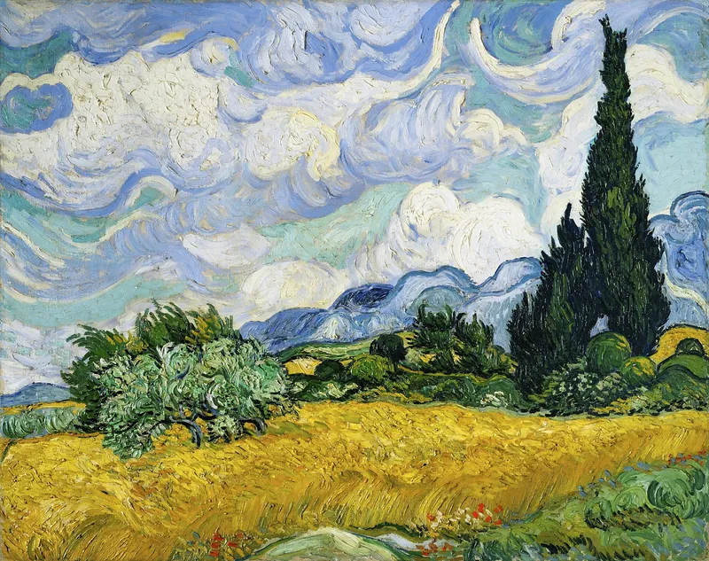
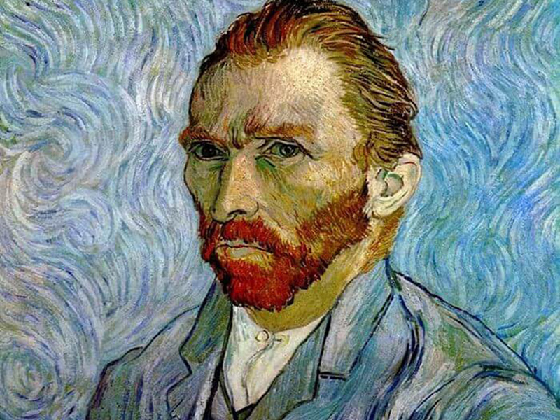
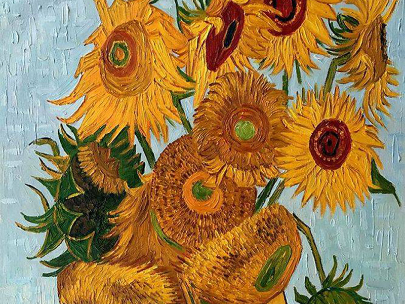

the artistic brilliance of
vincent
van gogh


"Normality is a paved road: it's comfortable to walk, but no flowers grow on it."

Explore Van Gogh's passion and creativity - a groundbreaking artist who inspired generations.